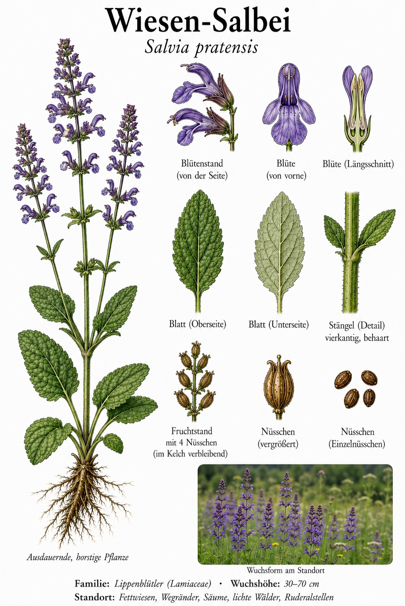
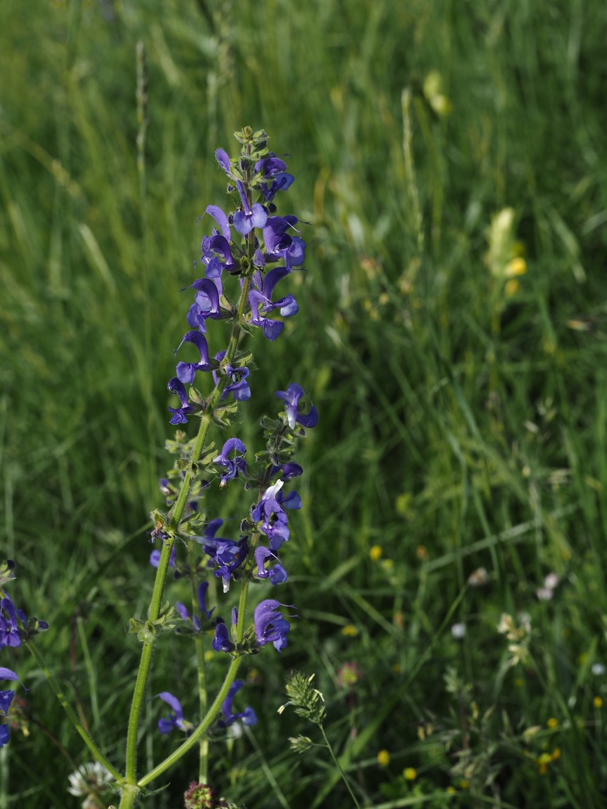
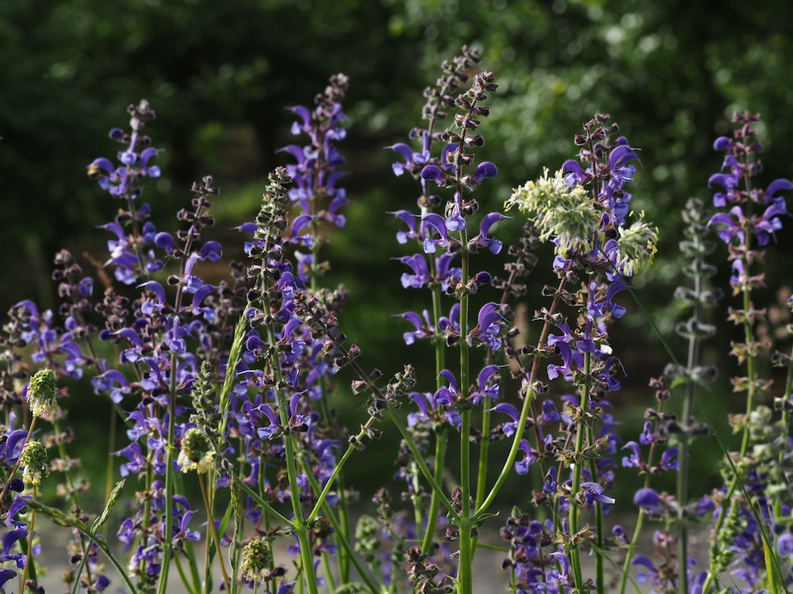

Violette Kerzen im Halbtrockenrasen
Ab Mai stellt der Wiesen-Salbei seine kräftig blauvioletten Lippenblüten in lockeren Scheinquirlen an aufrechten, vierkantigen Stängeln zur Schau. Die großen, runzeligen Grundblätter duften beim Zerreiben aromatisch. Man findet ihn auf Fettwiesen, Halbtrockenrasen, an Säumen und sonnigen Wegrändern – ein echter Blickfang der Sommerwiese.
Der Hebelmechanismus
Berühmt ist der Bestäubungstrick des Salbeis: Drückt eine Hummel in die Blüte, wirkt das Staubblatt wie ein Hebel und kippt nach unten – genau so, dass es den Pollen auf den Rücken des Insekts tupft. Beim Besuch der nächsten Blüte streift dieser Pollen die hervorstehende Narbe. So sichert die Pflanze die Fremdbestäubung – ein klassisches Schulbeispiel der Bestäubungsbiologie.